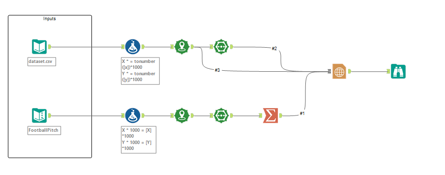
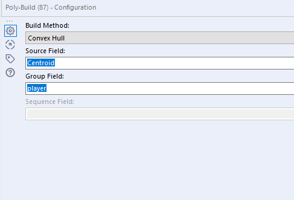
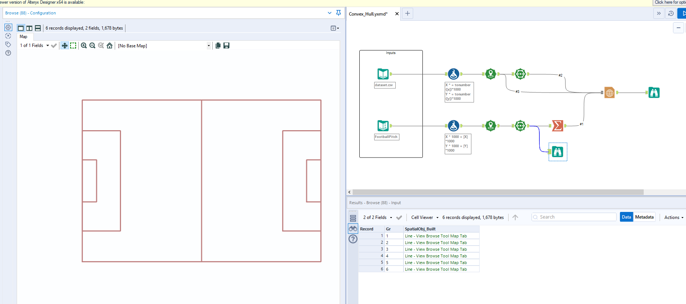
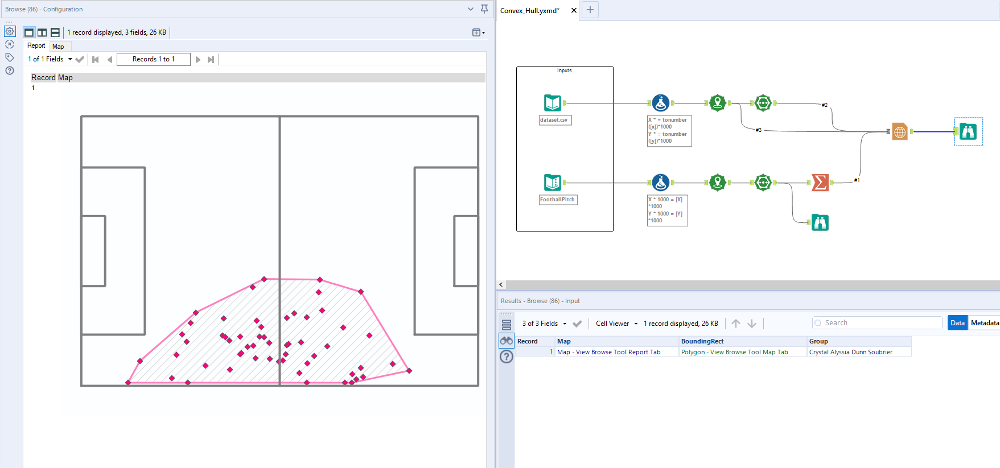

Hi all,
A couple on the bounce now in terms of football/soccer content in Alteryx. Truth be told it's been a fun little series creating a few of the same charts now in Python, Tableau and now Alteryx. Hopefully this unlocks doors for people in the industry in terms of the different tools they can utilise.
I've previously written about convex hulls, here.
In fact it was literally a year ago now. The walk through explains what the convex hull is, what it is useful for and how to retrieve the Statsbomb data using python and then visualising it in Tableau.
Well to make life simple we will take our original dataset and add it into Alteryx. Then recreate the same chart as seen in the tutorial.
As always, all material can be found in the Github repository at the top of the page.

What does our workflow do?
Well the initial input at the top of the flow is our data for Crystal Alyssia Dunn Soubrier from the final of the Womens World Cup for 2020/21. The data is from Statsbomb so we don't need to do anything in terms of transforming our data points. You can access my original code here.
We do however scale the points in equal size to make it easier to plot on a chart. The next thing we do is use the create points tool to plot these as x and y co-ordinates. The top part of the flow will be the co-ordinates of each of Crystal's passes.

The next part of the flow uses the convex hull function based on these x and y points. In terms of grouping we group on player, this would become more useful if our dataset contained more than one player.
In terms of the bottom half of the workflow, it is creating our baseline pitch, again also using the plot points tool.

The final thing to do is to use the report map feature to be able to showcase this visually.
#1 is our football pitch which we configure.
#2 is our convex hull.
#3 is the original points, I also joined this into the final output so we can see all the passes even if it isn't part of the convex hull!

Normally I've found the design quite challenging in Alteryx, but I just LOVE that you can add a hatch into the design as well as play around with base colours and opacity in this chart.
Short blog this week, hope those who use Alteryx have enjoyed the mini series. Don't forget if you want to check out my Tableau version of this chart you can find the tutorial here.
Wishing those off to Tableau Conference in Vegas this week the best of times. I'm going to get my head down personally and steer clear of the social channels for a week or so because of FOMO but I hope it's everything and more for those attending! Take care and chat soon.
LOGGING OFF,CJ
 Short blog this week, hope those who use Alteryx have enjoyed the mini series. Don't forget if you want to check out my Tableau version of this chart you can find the tutorial here.
Wishing those off to Tableau Conference in Vegas this week the best of times. I'm going to get my head down personally and steer clear of the social channels for a week or so because of FOMO but I hope it's everything and more for those attending! Take care and chat soon.
LOGGING OFF,
CJ
Short blog this week, hope those who use Alteryx have enjoyed the mini series. Don't forget if you want to check out my Tableau version of this chart you can find the tutorial here.
Wishing those off to Tableau Conference in Vegas this week the best of times. I'm going to get my head down personally and steer clear of the social channels for a week or so because of FOMO but I hope it's everything and more for those attending! Take care and chat soon.
LOGGING OFF,
CJ